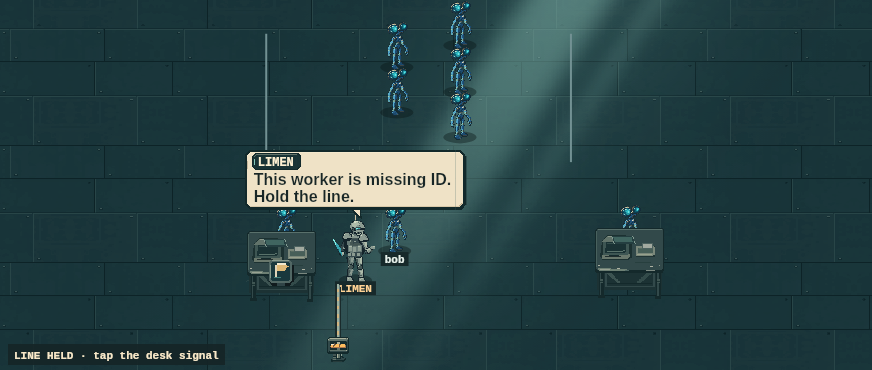

Days 2–4 · B / Raking light
Security & Conveyor floors
19 November 2026

Security · Missing IDDay 2 · tick 5671 · 872 × 370 camera
Composed proof · proposed floorFollow the teal shaft from the back of the held queue toward the register. The grip and heel wear sit at the desk approach.


ENGINE handoff
Repeat the enamel plates in factory coordinates. Draw the room’s light and wear once beneath the cast and machinery.
Final visual review takes place after ENGINE binds the layers in the live player.